宮古島的觀光資源呈現多核心分佈，從自駕租車到跨海大橋巡禮，掌握交通策略是暢遊宮古島的第一步。
宮古島與周邊離島以三座壯觀的跨海大橋相連。伊良部大橋全長3,540公尺，是日本最長的免費跨海大橋，其S型曲線宛如海上雲霄飛車。池間大橋擁有最極致的「池間藍」透明度。來間大橋則是捕捉魔幻夕照的最佳地點。建議安排一整天進行「上午池間、中午伊良部、傍晚來間」的光影時間軸巡禮。
宮古島自駕是首選。台灣旅客需準備護照、台灣駕照正本、日文譯本三證合一。小型車起步約¥6,000/24h，比大型車便宜40%。提早預訂可享「早鳥優惠」。
2024年循環巴士已改為以機場為中心的雙向循環路線，不再駛入南部渡假區。八千代巴士「池間一周線」可達北部池間島與大神島轉乘碼頭。建議住平良市區以最大化公車效益。
電動腳踏車¥1,000/30min起，最適合區域深度探索。注意：全日租金(¥6,000)等同小型汽車24h價格。將E-bike定位為「最後一哩的沉浸體驗」，而非長途移動工具。
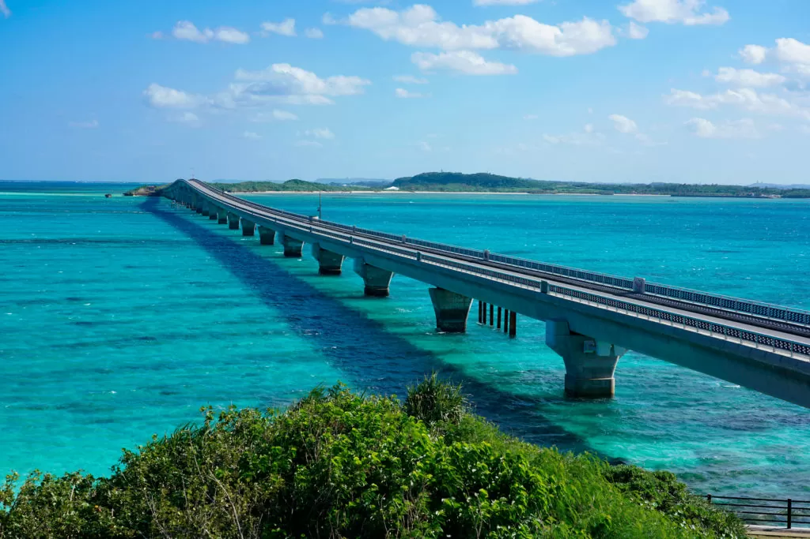
宮古島（下地島）直飛優惠 NT$6,813 起，把握限定日期，飛向宮古藍！
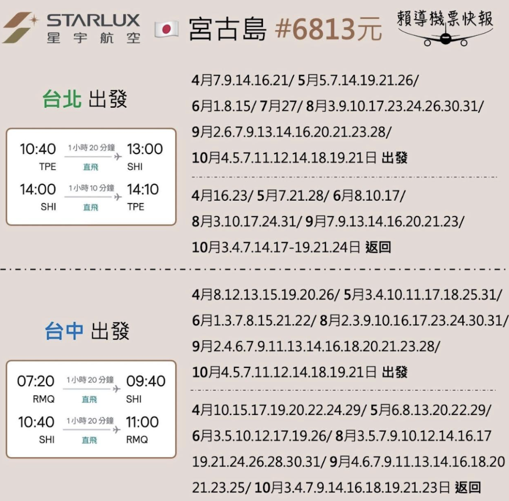
資料來源：賴導機票快報 | 星宇航空 STARLUX Airlines
從九十年傳承的宮古蕎麥麵到夢幻和牛、從蒂法尼藍的海景餐車到礦物質奇蹟的雪鹽冰淇淋，每一口都是島嶼風土的結晶。
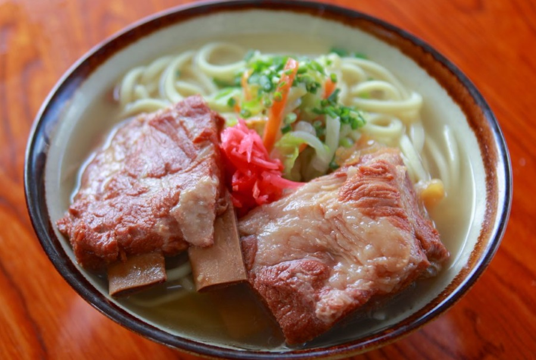
傳統料理一碗清澈見底的琥珀色湯中，隱藏著島嶼九十年的溫柔記憶。翻開寬厚麵條下的秘密——燉至入味的三層豬肉與波浪魚板，彷彿在訴說著琉球先民那份不張揚卻深沉的愛。「古謝そば屋」自1932年傳承至今，每一口都是對時光最虔誠的致敬。
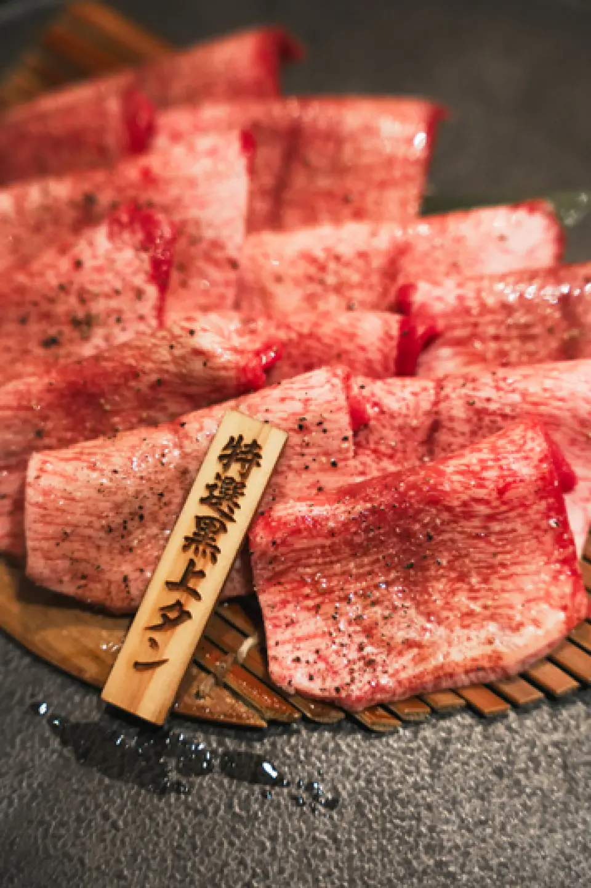
頂級和牛在島嶼溫暖的海風中成長、飲著珊瑚礁地下水的宮古牛，脂肪如雪花般細緻散落在每一寸肌理之間。入口的那一瞬間，清甜的油脂在舌尖化開，彷彿整座島嶼的溫柔都凝縮在這一片薄切之中。產量極低，離開宮古島便再也嚐不到的夢幻滋味。
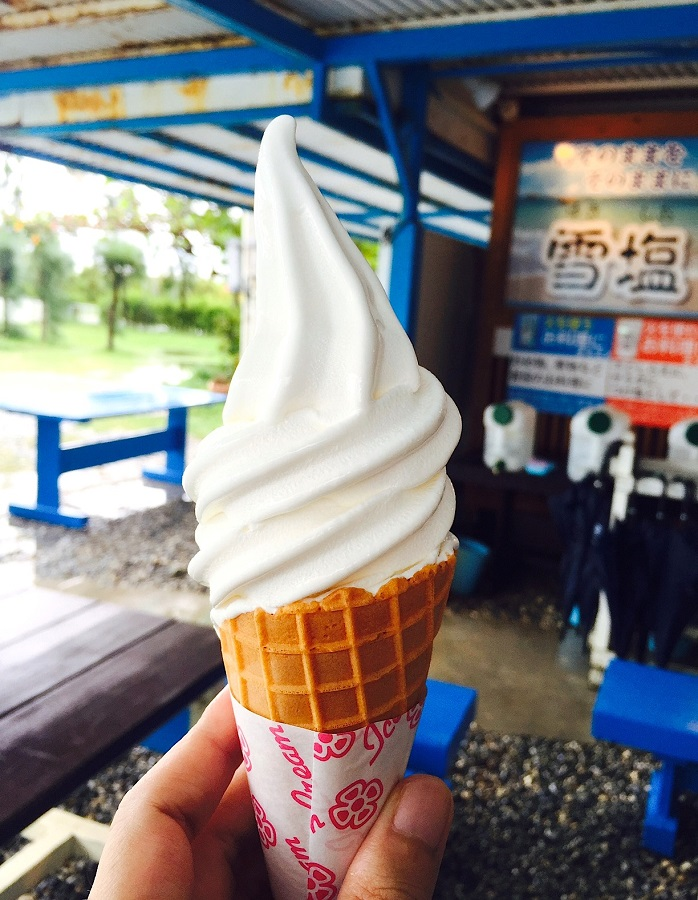
特色甜點當宮古島地下海水穿越千年珊瑚礁層，淬鍊出如粉雪般細緻的雪鹽，微鹹的海風氣息與香濃牛奶在唇齒間完美交融。灑上一撮抹茶鹽或洛神花鹽——每一種滋味都是一場味覺的小旅行。350日圓的幸福，是這座島嶼最溫柔的饋贈。
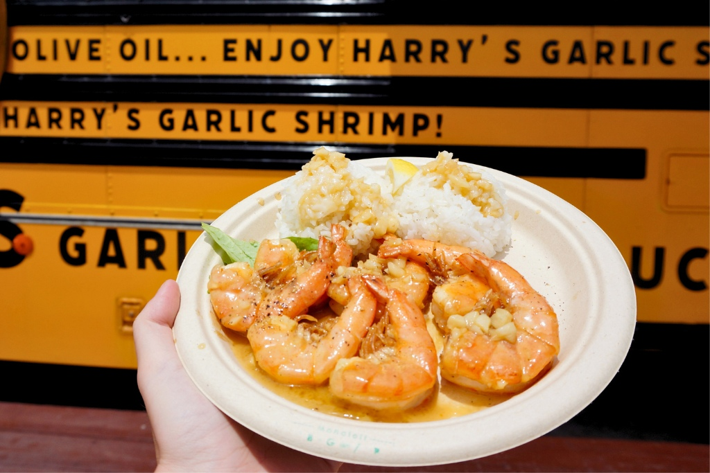
海景餐車佇立在西平安名崎的海風中，一口蒜香四溢的金黃大蝦配上鬆軟白飯，眼前是令人忘卻呼吸的無邊際蔚藍——這不是夏威夷，這是宮古島。而不遠處的Heaven's Truck，以蒂法尼藍的露台沙發迎接每一位追逐夕陽的旅人。
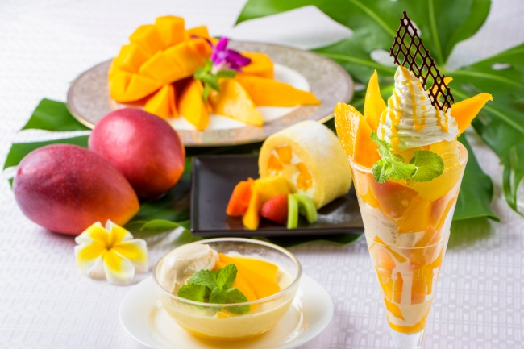
熱帶水果盛夏的宮古島，空氣中瀰漫著熟透芒果的甜香。在距機場僅一分鐘的Blue Turtle Farm，穿越熱帶綠蔭，一杯濃郁到近乎奢侈的芒果汁正等待著你。那是整個夏天陽光的味道，是島嶼送給旅人最燦爛的臨別禮物。
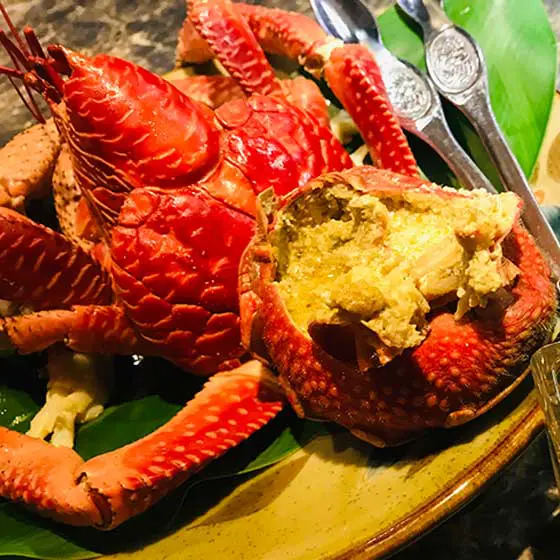
極致珍饈世界最大的陸生甲殼類，在宮古島的月光下悄然出沒。餐廳主人以水果細心育肥一個月以上，讓蟹肉飽含天然果香。巨螯中的肉質緊實如龍蝦，纖維間湧動著強烈的鮮甜；蟹膏的濃郁更勝頂級海膽——以泡盛酒點綴蟹膏蘸肉，那份厚重而持久的鮮味，是宮古島最極致的味覺符號。
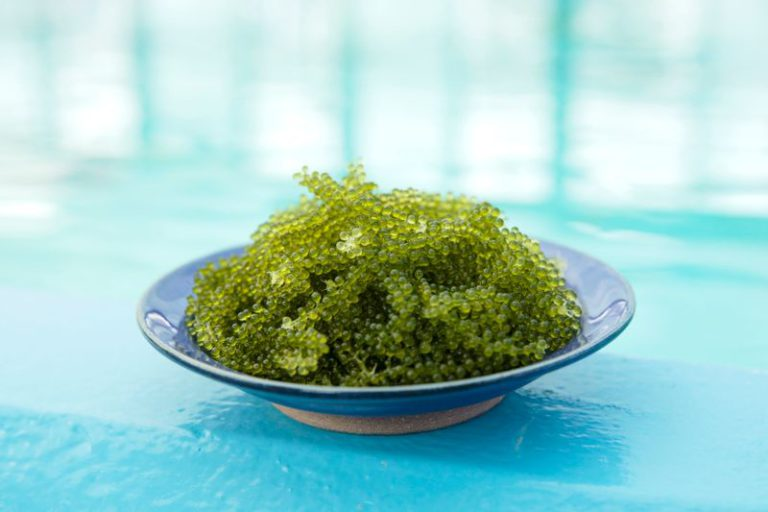
海洋珍珠一粒粒翡翠色的小球在齒間爆裂的瞬間，釋放出的是濃縮的亞熱帶海水精華。被國際美食界譽為「綠色魚子醬」的海葡萄，那令人上癮的「啵啵」爆裂感是無可替代的味覺娛樂。切記不可冷藏、不可預先沾醬——唯有常溫與輕蘸，才能守護這來自珊瑚礁海域的翡翠之夢。
在宮古島的深夜，一鍋熱氣蒸騰的島關東煮，是旅人最溫暖的歸宿。燉煮超過六小時的豬腳（Tebichi），膠質徹底釋放，入口即化。搭配一杯島嶼泡盛，在昏黃燈光下品味這份琉球式的慢時光。而稀有的阿古豬，膽固醇僅一般豬肉四分之一，清甜鮮美，是島嶼長壽飲食的秘密之一。
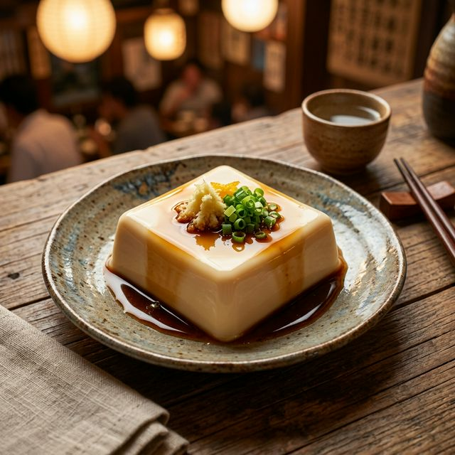
琉球小食一塊看似平凡的白色豆腐，入口卻是意想不到的Q彈與滑順——因為它根本不含大豆。純粹由島產花生與澱粉凝結而成的Jimami Tofu，口感如麻糬般細膩，淋上微甜薑汁醬油，花生的天然油脂在舌尖散開，是琉球料理中最溫柔的開場白。
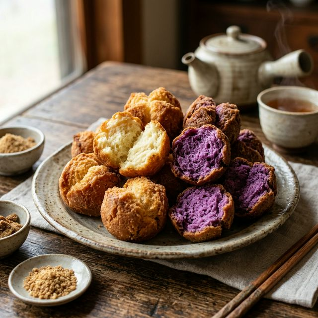
島民甜點外皮炸至金黃酥脆、內裡保持紫薯或黑糖的濕潤綿密——伊良部島Nakayukui商店的Sata Andagi，是沖繩傳統甜食最樸實也最令人回味的型態。而同條街上，手工香蕉蛋糕用最質樸的完熟香蕉香氣，悄悄溫暖了每個離島前最後一個午後。這些不起眼的小食，卻是島民世代相傳的甜蜜密語。
從超現實的17END跑道海灘、東洋第一白沙灘，到隨潮汐浮現的幻之島，每一個角落都是攝影師的天然畫布。📷 標記為攝影師精選的最佳取景建議。
全長3,540公尺，日本最長的免收費橋樑。橋身為預留航道而設計的中央起伏段，從遠處觀看彷彿一條在波浪中律動的巨龍。自駕穿越時，兩側遼闊的鈷藍海景隨橋身坡度起伏，營造出「在海上飛馳」的幻覺，是宮古島最具動態幾何線條張力的攝影題材。
連接宮古島北端與池間島，橋下海域被公認為「池間藍」的發源地。透明度之高，在橋面上就能直接看見海底礁石與沙地。白色塔身與極具透明感的藍綠色海水形成強烈對比，是捕捉宮古島最純粹色彩的絕佳場域。
全長1,690公尺，連結宮古島與來間島。兩側海水色調層次異常分明，從淺灘的淺青色到深海的深靛藍，呈現完美的色彩梯度。從來間島上的龍宮城展望台俯瞰，大橋就像繫於綠寶石海面上的白色絲帶，搭配對岸前濱海灘的純白弧線，構成宮古島最經典的明信片視角。
當巨大的客機掠過頭頂、降落在伸入碧海的跑道上，腳下是透明度超過30公尺的漸層翡翠海水——這不是電影場景，這是17END。退潮時露出的「幻之沙灘」上，數百面天然潮池如鑲嵌在海岸的鏡子。紅色降落導航燈橋與宮古藍海水形成強烈對比色效果，是全球知名的飛機攝影聖地。
綿延7公里的純淨珊瑚白沙，海浪輕柔得像嬰兒的呼吸。極細的粉雪沙質充當天然大型反光板，有效消除人像面部陰影，是拍攝網美照與婚紗照的最佳地點。夕陽時分，餘暉將白沙灘染成夢幻粉紫色，貼地拍攝的人影剪影宛如南美鹽湖的「天空之鏡」。
翻越一座潔白的沙丘，在登頂的那一刻，極致的蔚藍毫無預警地衝擊你的視覺。渾然天成的石灰岩拱門框住碧海與遠方的地平線，彷彿大自然親手為你開啟了一扇通往天堂的窗。走入拱門下方，由暗處向明亮的海面拍攝，強烈的光比變化與自然相框感，能瞬間提升照片層次。
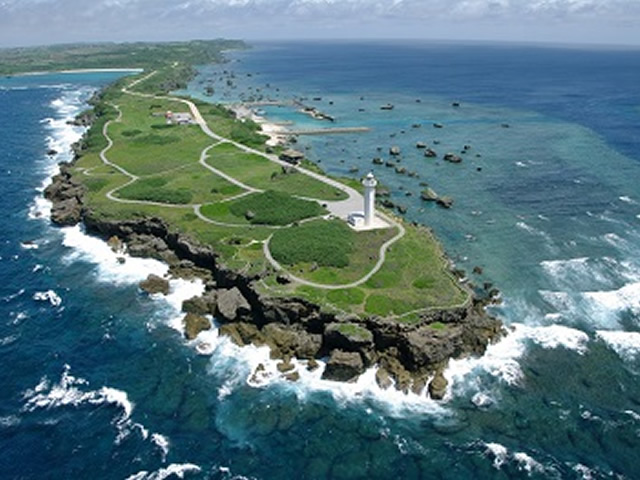
日出聖地如同一柄利劍般延伸入海的狹長岬角，在宮古島的最東端迎接每一天的第一道曙光。站在燈塔上可獲得360度環繞視野，親眼目睹太平洋與東海在岬角末端交會撞擊出的巨大浪花。春末夏初，成片的麝香百合在海風中綻放，純白花海與巨大海嘯石形成柔與剛的強烈對比。
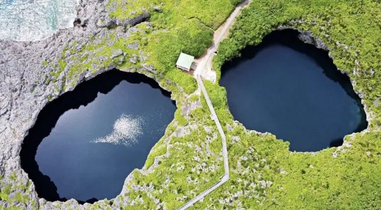
國家天然紀念物兩個相鄰的巨大圓形水池，池底秘密相通並直達大海深處，形成獨特的溫躍層現象。凝望那近乎黑色的靛藍，彷彿在窺探地球最深沉的秘密。當陽光垂直射入，深邃的池水閃爍著藍寶石般冷冽而神聖的光澤。這裡不僅是風景攝影勝地，更是頂尖潛水員嚮往的探險殿堂。
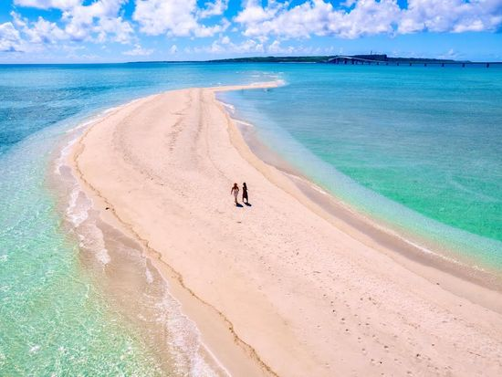
潮汐限定她是海洋最詩意的表演——只在退潮時分，一片純白的沙洲悄然浮現於宮古藍的汪洋之中。360度完全被藍色海洋與天空環繞的純白空間，沒有任何建築物、沒有任何遮蔽物。從高空俯瞰，沙洲呈現流動的有機形狀，人在中心顯得渺小而孤寂——這是宮古島最震撼的大尺度空間對比。
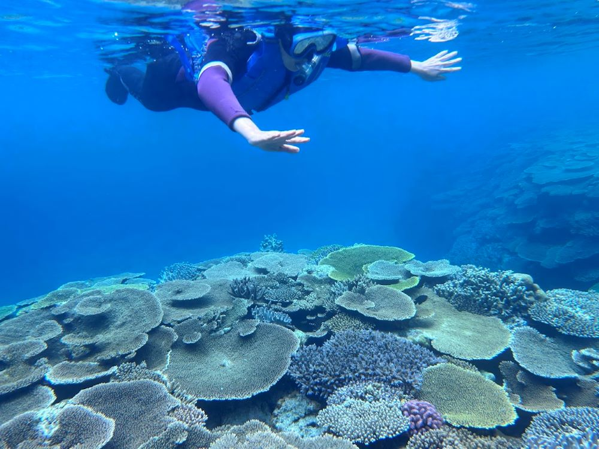
私房秘境隱藏在伊良部島雜草叢生路徑後方的白色石階，直接通向海洋深處。在當地語言中意為「潮間帶挖掘蛤蜊之處」，因一張宛如「走進大海」的照片而聲名大噪。階梯末端消失在澄澈見底的海水中，低角度拍攝可創造出超現實的、孤獨而唯美的意境——是宮古島最震撼的私房攝影秘境。
從與海龜共游的生態奇遇到藍寶石洞窟的探險，從南國纜車的海景到銀河星空下的叢林探索，24小時都有精彩等著你。
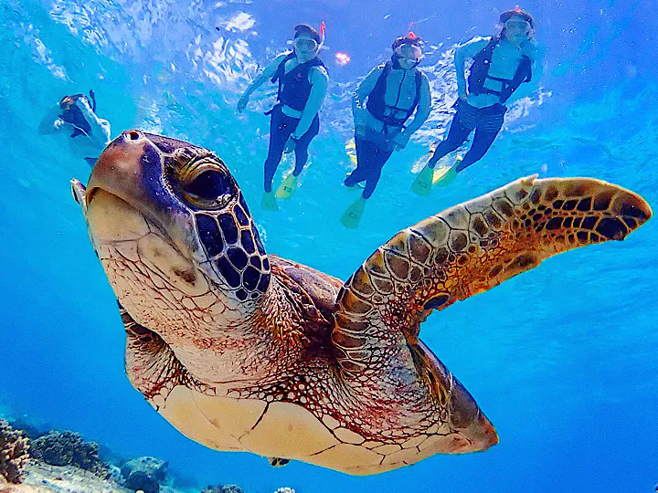
生態奇遇在宮古島清澈見底的淺海中，一隻綠蠵龜緩緩划動著翅膀般的前肢，從你身旁優雅而從容地游過。這不是水族館的隔窗觀賞，而是在自然的領地中，與這位海洋古老住民最真實、最近距離的溫柔相遇。專業嚮導確保高達99%的驚喜機率，1歲幼兒也能安心參與。
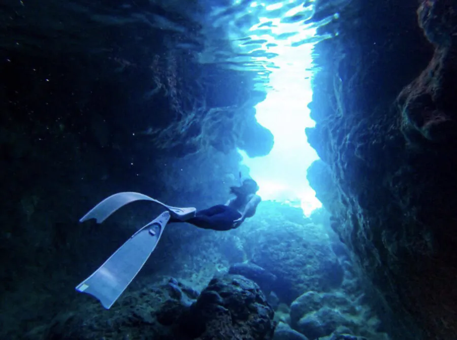
洞窟探險陽光穿透海水，在石灰岩洞穴的深處折射出如藍寶石般不可思議的夢幻光芒。這是伊良部島海岸線藏在岩壁後的秘密宇宙。更深處的南瓜洞中，數萬年沉積的鐘乳石柱如沉睡的巨人，等待你划著獨木舟前去喚醒。從光到暗，從海到洞，一場穿越地質時間的壯麗冒險。
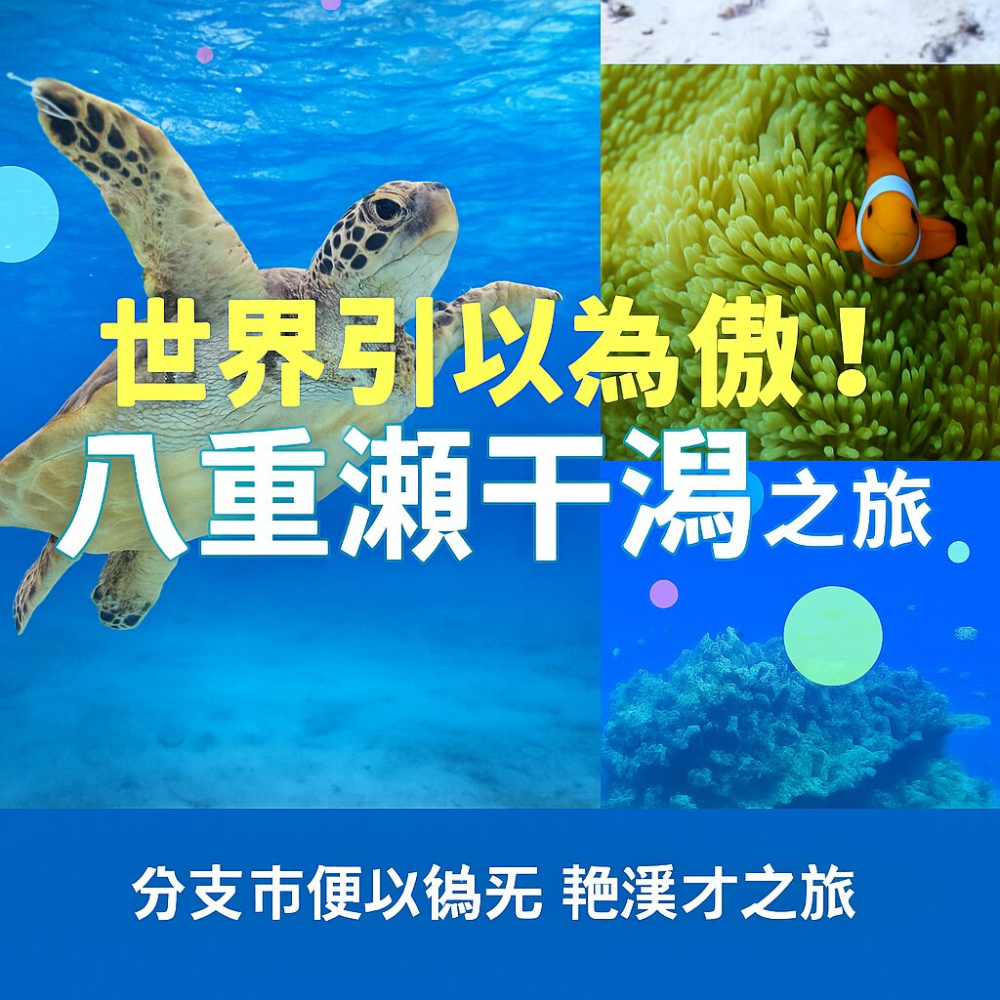
珊瑚大陸日本最大規模的珊瑚礁群，被譽為「夢幻的大陸」——八重干瀨位於宮古島北方約6.5公里的外海。搭乘遊艇駛向這片隱沒於海面下的生態寶庫，海水透明度超過30公尺。桌狀珊瑚、軟珊瑚、彩色熱帶魚群與海龜在你身邊悠然穿梭，彷彿潛入一座水下的熱帶雨林。
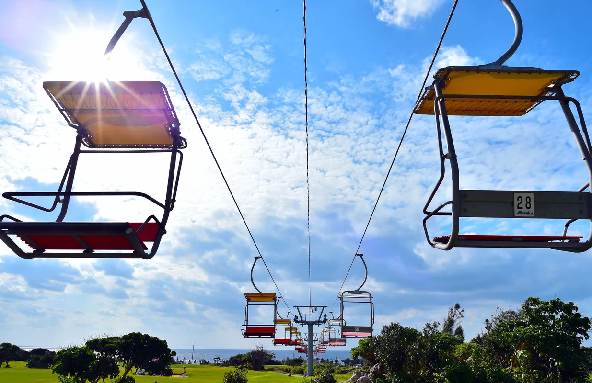
奢華體驗坐上沖繩唯一的開放式海景纜車，在毫無玻璃阻隔的微風中，從高處緩緩滑向蔚藍海岸線。然後浸入日本最南端的琥珀色天然溫泉，讓富含鐵質的金黃泉水洗去旅途的疲憊。這是宮古島送給你的一場南國奢華療癒儀式。
不需要換裝、不需要會游泳——走入水深4公尺的海底觀察室，透過24面強化壓克力窗，與野生的熱帶魚、海龜甚至章魚面對面。而「博愛碧海晴天號」半潛水觀光船，則帶你穿越密集的珊瑚礁群，在移動中欣賞水下25公尺深的海底龍宮。最適合親子家庭的海洋初體驗。
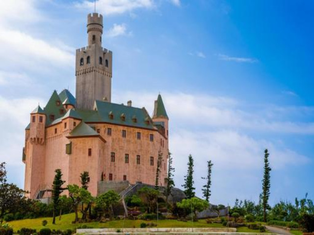
異國冒險在南國棕櫚樹下矗立著一座中世紀德國古堡——這不是海市蜃樓，而是為紀念1873年宮古島民義勇救援德國商船的歷史而建。完整複製德國馬克斯堡的城堡建築內，展示著這段跨越國界的救援史詩。KINDER HAUS裡的德國童話世界，更讓孩子們在歐陸氛圍中盡情探索。
在熱帶植物園內的工藝村，親手捏製屬於自己的守護神獅子（Shisa）、用島嶼海灘的貝殼拼貼相框，或將手帕染成代表宮古藍的靛藍漸層。更深度的旅人，可以在傳統工藝品中心近距離觀察國寶級「宮古上布」的織造過程——這種夏季最高級的和服布料，是島嶼千年工藝智慧的結晶。
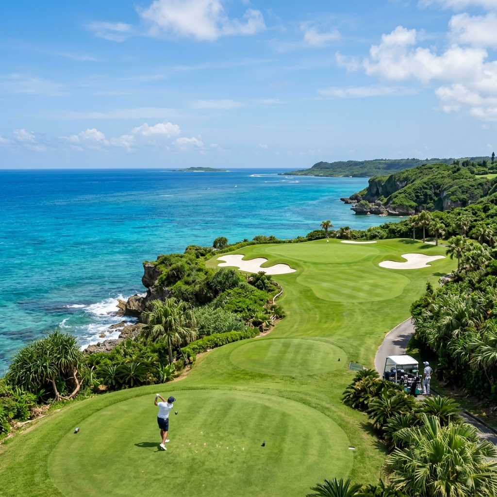
海景揮桿全日本最靠近大海的高爾夫球場群——Emerald Coast的果嶺緊鄰白沙灘，揮桿時彷彿要將球擊入宮古藍之中。Ocean Links東側球道上，野生孔雀偶爾穿梭其間。而Shigira Bay Country Club的全18洞皆可飽覽海景，是將體育競技昇華為視覺盛宴的極致體驗。
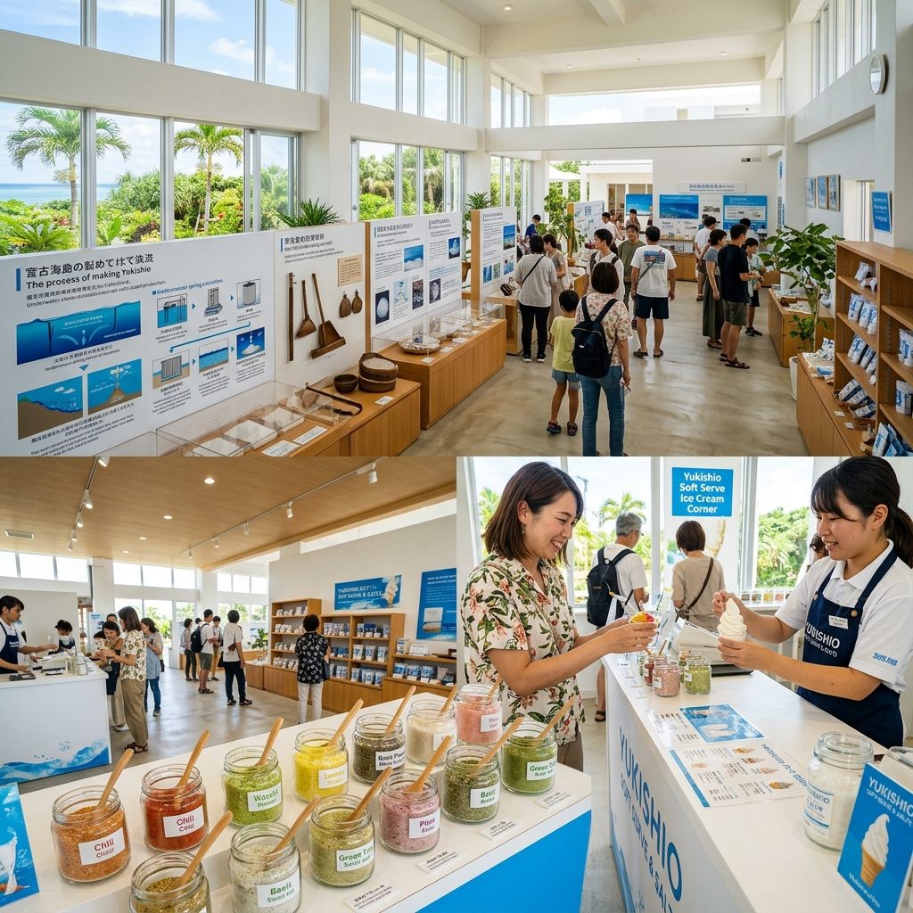
味覺遊樂場宮古島地下海水穿越千年珊瑚礁層，淬鍊出金氏世界紀錄認證「礦物質種類世界第一」的雪鹽。在博物館中觀摩瞬間蒸發乾燥技術後，最令人期待的環節來臨——在雪鹽霜淇淋上自由搭配十幾種調味鹽：島辣椒、洛神花、芥末、黑芝麻……每一種鹹甜交織都是一場味蕾的微型旅行。
當最後一抹夕照沉入東海，另一個宮古島才剛甦醒。遠離城市光害的亞熱帶叢林中，銀河如絲帶橫跨整片星穹。手電筒劃破濃密的黑暗，照亮了藏在礁岩間的巨大椰子蟹、背著奇特貝殼的寄居蟹，以及樹冠上靜靜凝視的琉球角鴞。這是一場讓大人重拾童心、讓孩子驚嘆連連的真實版生態尋寶。
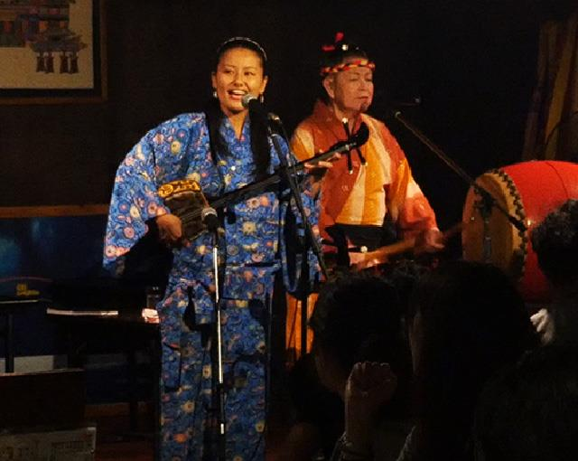
文化體驗三線琴清脆的撥弦聲迴盪在熱鬧的居酒屋中，歌者以宮古島的方言唱著祖先傳承的旋律。舉杯泡盛、品嚐海葡萄與宮古牛排，當全場在「卡恰西」的歌聲中歡笑起舞——在這一刻，語言的隔閡消融了，你成為了這座島嶼最真實的一部分。